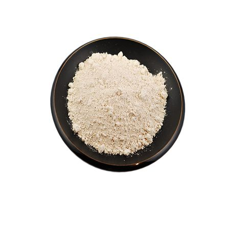

Back to Products
Silk Powder

Silk powder is a kind of silk protein with high molecular weight, water soluble above 60 degrees temperature .. Silk Powder has the function of excellent natural humidity-control and caring for one's skin, preventing part of ultraviolet radiation, prevent and curing some skin disease result from all kinds of dampness and dryness.
It has super effect used in prevent sunshine produce The silk powder possesses the unique ability of absorbing oil, therefore it is suitable for the cosmetics applied to the oily skin. The particle size is from 5um to 100um with various specifications. Our extra fine Silk Powder can more easily mixed with cosmetic than common ones with thinner particle size.
Facts
| Common name | Seidecosa Silk Powder |
| Appearance | White or light yellow color |
| Solubility | Water soluble |
| Molecular weight | 100,000 DA |
Key Properties & Usage
- 1. Excellent natural humidity-control
- 2. Caring for one's skin
- 3. Prevent and cure various skin disease
Applications
- 1. Natural humidity-control
- 2. Preventing part of ultraviolet radiation
- 3. For facial make ups/hair binding pastes, hair sprays
| Item | Index |
|---|---|
| exterior | white or grayish powder |
| Fine Rate μm | 5-100 |
| Total Nitrogen % | ≥14 |
| PH Value | 5-7.5 |
| Loss on Drying % | ≤6.5 |
| Residue on Ignition % | ≤2 |
| Heavy Metal (as Pb), mg/kg | ≤20 |
| Arsenicum (as As), mg/kg | ≤2 |
| Number of Aerobic Bacterial | ≤100 |
| Other Pathogenis Bacteria | Can’ t be detected |
Package:
Seidecosa Silk Powder is packed in compound plastic bag of 1 kg/25 kgs of drum. The shelf life of the product is two years under the sealing condition. It should be kept in cold, dry & no direct light place for two year’s period of quality guarantee